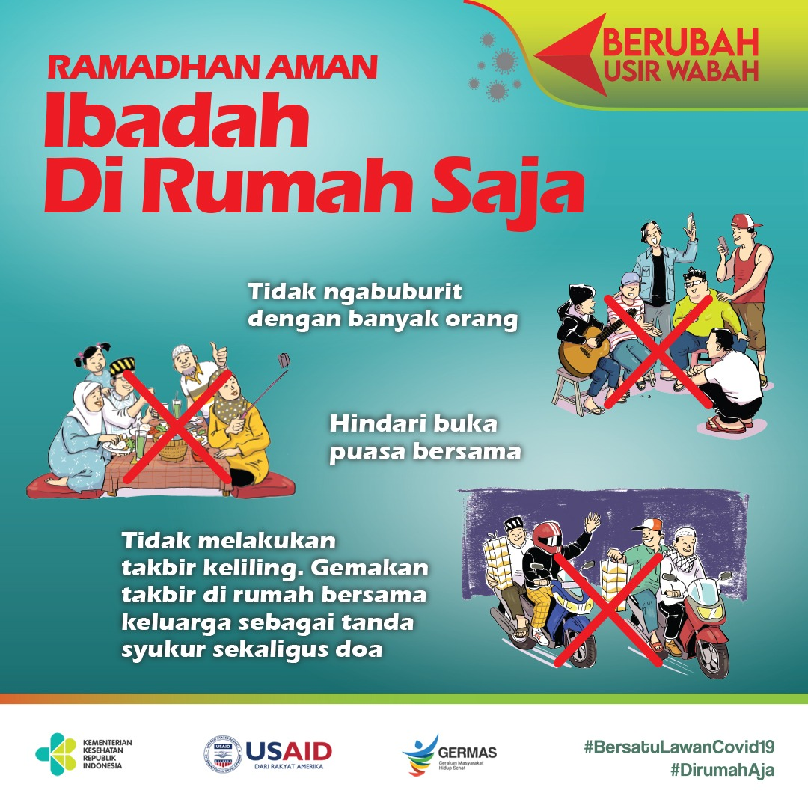

Covid
COVID-19 adalah penyakit yang disebabkan oleh virus korona baru yang disebut SARS-CoV-2.Di antara mereka yang mengalami gejala, sebagian besar (sekitar 80%) sembuh dari penyakit tanpa perlu perawatan rumah sakit. Sekitar 15% menjadi sakit parah dan membutuhkan oksigen dan 5% menjadi sakit kritis dan membutuhkan perawatan intensif.
